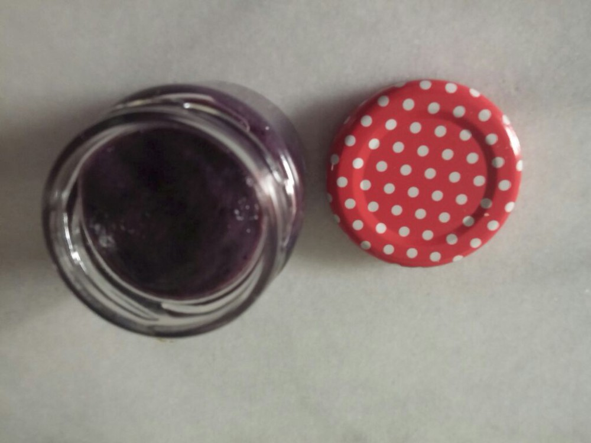

Fruit Date - Sweet Puree
Ready for a date?
The fruit puree with dates is perfect as a dessert in a glass
or as a spread on bread. Try it.
Ingredients
- 100g blueberries/strawberries or raspberries
- 4-5 dates (or 1 banana)
- 1-2 tablespoon chia seeds or fleas
- 1 tablespoon lemon juice

Instructions
-
Fresh or frozen fruits can be used.
For frozen foods, please thaw them beforehand and use also the juicy water. - Let the chia seeds or fleas soak in twice the amount of water (10-15 minutes).
- Put the desired ingredients in the mixer, depending on how juicy the fruits are, you can add a little water, then mix everything. and possibly let it swell a little.
-
Then the fruit puree is ready.
Please store in small glasses in the refrigerator.
The glasses can be kept for about 2-3 days in the fridge... - ... but they will not stay there so long ...
- Note: Store some glasses in the freezer so you will always have a sweet dessert as backup.